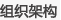

静安区居于上海的中心腹地，是上海最重要的高端商贸及商务办公区域之一，区内沿南京西路聚集了国际著名品牌、跨国公司地区总部、专业服务机构、各国使领馆、高星级宾馆和剧院等文化设施。静安区的经济发展以高端和国际化的第三产业为主，现代服务业集聚发达。静安区具有上海市最为集中
的文化与传媒产业，加上历史传承和人文积淀，这里也具备了发展传文化、传媒、戏剧、创意产业的禀赋。静安区同时还吸引了众多国内及国际高级白领、专业人士居住和安家。上海市静安区正在努力发展成为现代化国际城区。
2010年是上海世博年，也是“十二五”规划编制年。“十一五”期间，上海市静安区按照“高起点、外向型、国际化”的发展思路，坚持双高战略，打造国际静安，现代化国际城区建设取得丰硕成果。未来五年，如何全面对接、积极融入上海“四个中心”建设大局，以“发展为先、民生为本、文化为魂”...
【论坛主题】
创新•转型•发展——静安区国民经济和社会发展“十二五”规划国际研讨会
【论坛时间】
2010年9月21日（星期二） 13:30-18:00
【论坛地点】
中国•上海 静安 宏安瑞士大酒店
【论坛规模】
200人

主办方：
上海市静安区人民政府
联合主办方：
《福布斯》中文版
承办方：
上海市静安区发展和改革委员会
上海市静安区商务委员会

21世纪经济报道
理财周报
经济之声

赞助及合作：刘小姐 021-68412915
媒体及注册：张小姐 021-68412911
报名及参会：徐小姐 021-68413903
赖声川
台湾著名舞台剧导演
蒲敬思
世邦魏理仕亚洲区
总裁兼首席执行官
刘云华
新加坡南洋理工大学
人文与社会科学学院
经济学副教授
杨团
中国社科院政策
研究中心副主任
肖林
上海市发改委副主任